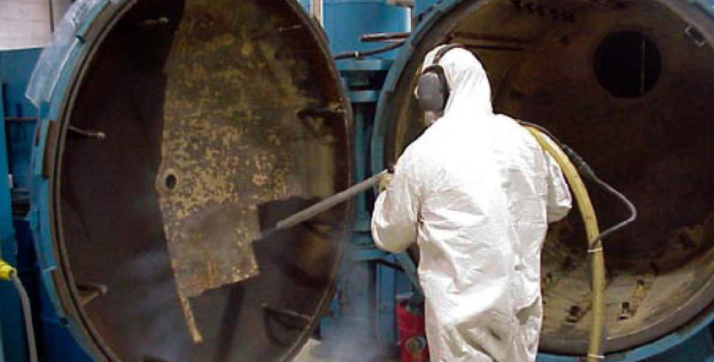

Чистка резервуаров и емкостей
Технология хранения жидких сред в резервуарах и емкостях предусматривает необходимость периодического удаления отложений, подготовки к окрашиванию и чистки поверхностей от загрязнений. В нефтехимической, пищевой, фармацевтической промышленности и на производстве чистоте емкости придается особое значение в связи с требованиями безопасности и технологическими условиями. Водоструйная очистка и промывка резервуаров, складских и технологических емкостей позволяет провести работы в короткие сроки, по оптимальной цене и без риска повреждения поверхностей.

Область применения и особенности технологии гидроструйной очистки резервуаров
Удаление твердых, слоистых, вязких и агрессивных загрязнений с поверхностей резервуара без повреждения и изменения качества поверхности производится подаваемой под высоким давлением водой через специальные насадки. За счет использования насадок и подвижной в двух плоскостях головки достигается эффект полного отслоения загрязнений и полная очистка поверхности. Метод водоструйной безабразивной чистки емкостей и резервуаров применяется в разных отраслях промышленности:
- Нефтехимия — эффективное отслоение твердых наростов, удаление слоистых воскообразных отложений, органических и минеральных загрязнений со стенок, дна и крыши резервуара любой конструкции;
- Пищевая промышленность и пивоваренное производство — удаление биологических слизистых и слоистых загрязнений, сгустков бактериального происхождения, промывка поверхности без создания шероховатости;
- Фармацевтическая промышленность — восстановление чистоты стенок и дна резервуара с удалением накипи, минеральных и биологических отложений, в том числе твердых и плотных слизистых;
- Химическая промышленность и хранение топливных запасов — очистка резервуара дистанционным безыскровым методом без риска возгорания;
- Очистка подземных резервуаров, емкостей, конструктивно встроенных в здания и сооружения, цистерн с ограниченным доступом во внутреннее пространство.
В емкостях для технической и питьевой воды, в том числе и в РВС любого объема
гидроструйным методом можно провести очистку от солей жесткости, накипи (при хранении
и обороте горячей воды), накопившейся бактериальной слизи.
Гидроструйная очистка применяется для подготовки к окрашиванию путем удаления очагов
коррозии и слоев старого ЛКП, грунтовки, изоляционных составов. Ограничений на
использование установки для наружной и внутренней чистки не имеется. При пониженном
давлении выполняется последующая мойка поверхностей.
Технологические преимущества гидроструйной промывки резервуаров
- По эффективности воздействия струя воды под высоким давлением превосходит металлические инструменты ударного действия, скребки и щетки. При этом поверхность при контакте с водой не приобретает дополнительную шероховатость.
- После полной водоструйной очистки увеличивается период нарастания новых отложений благодаря гладкости поверхности.
- В отличие от механической чистки, гидроструйная безабразивная технология позволяет захватывать участки присоединения труб, клапаны, прочие технологические выступы без повреждения оборудования и необходимости повторной ручной зачистки.
- Исключается искрение внутри емкости, возгорание остатков вязких сред и паров, отсутствует риск попадания человека в опасные и агрессивные среды.
- Установка с поворотной головой и струйными насадками захватывает все поверхности - стенки, дно, крышу, верхние и нижние опорные кольца. Не требуется добавление в воду агрессивных и активных веществ.
При очистке РВС с плавающими и понтонными крышами водоструйная установка обрабатывает недоступные для других устройств части емкости — опоры понтона, направляющие крыши, короба плавучести. При этом не повреждаются уплотнительные элементы и кольца жесткости со сложным профилем.
Время обработки и источники воды для чистки
Время обработки в сравнении с механическим удалением загрязнений уменьшается в разы.
В среднем полная очистка одного квадратного метра условной поверхности емкости
продолжается 15 - 30 минут. Для проведения очистки применяется мобильная установка,
помещаемая в емкость через технологическое окно 400 х 400 мм и управляемая оператором
дистанционно.
Для чистки используется вода без добавления химически активных веществ, полученная из
пожарного или промышленного водопровода. За счет высокого давления (до 1800 - 2800 бар)
и точного направления тонкой струи расход воды оказывается незначительным. При
отсутствии доступа к водопроводу мобильная установка может работать с собственными
емкостями на 15 минут чистки. Насосы располагаются в автомобиле с отдельными приводом
от ДВС, для подачи воды на чистящую консоль применяются рукава высокого давления длиной
до 200 м. Рабочая часть установки с насадками может быть подана через верхние, нижние и
боковые люки резервуара.